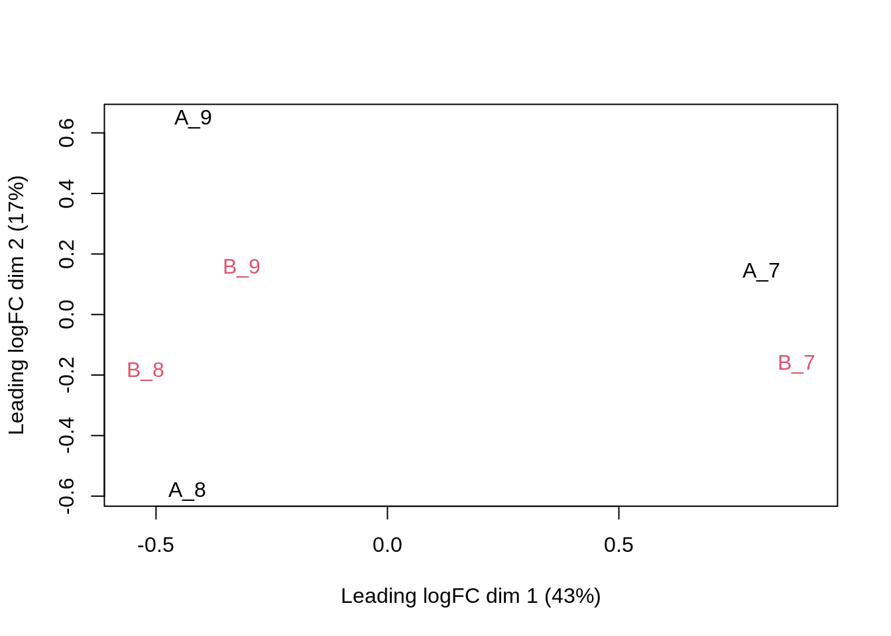
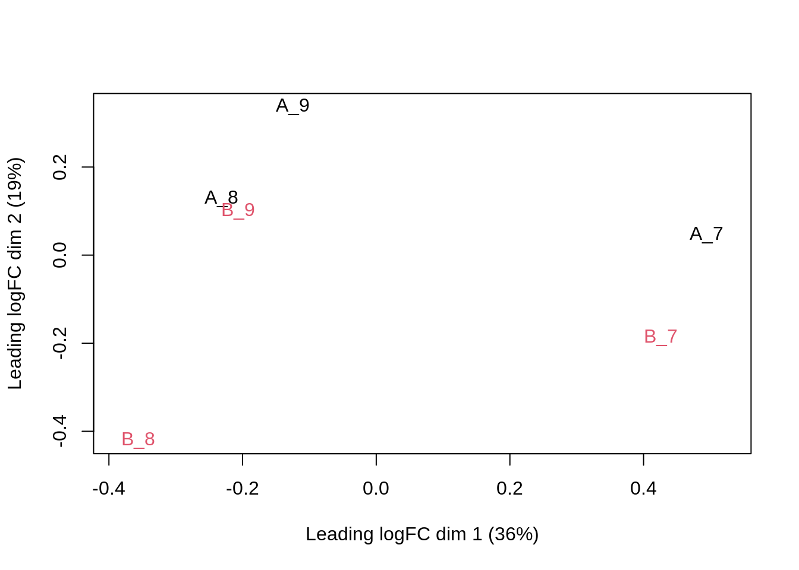

Analysis of the CPTAC Spike-in Study
Lieven Clement and Laurent Gattp
statOmics, Ghent University (https://statomics.github.io)

This is part of the online course Proteomics Data Analysis (PDA)
1 Intro: Challenges in Label-Free Quantitative Proteomics
1.1 MS-based workflow

Peptide Characteristics
- Modifications
- Ionisation Efficiency: huge variability
- Identification
- Misidentification \(\rightarrow\) outliers
- MS\(^2\) selection on peptide abundance
- Context depending missingness
- Non-random missingness
\(\rightarrow\) Unbalanced pepide identifications across samples and messy data
1.2 Level of quantification
- MS-based proteomics returns peptides: pieces of proteins

- Quantification commonly required on the protein level

1.3 Label-free Quantitative Proteomics Data Analysis Workflows

2 QFeatures
2.1 Data infrastructure
- We use the
QFeaturespackage that provides the infrastructure to- store,
- process,
- manipulate and
- analyse quantitative data/features from mass spectrometry experiments.
- It is based on the
SummarizedExperimentandMultiAssayExperimentclasses.

Conceptual representation of a SummarizedExperiment object. Assays contain information on the measured omics features (rows) for different samples (columns). The rowData contains information on the omics features, the colData contains information on the samples, i.e. experimental design etc.
Assays in a QFeatures object have a hierarchical relation:
- proteins are composed of peptides,
- themselves produced by peptide spectrum matches
- relations between assays are tracked and recorded throughout data processing
](cptac_analysis_files/figure-html/featuresplot-1.png)
Conceptual representation of a QFeatures object and the aggregative relation between different assays. Image from the QFeatures vignette
3 Background of the CPTAC Spike-In Study
This case-study is a subset of the data of the 6th study of the Clinical Proteomic Technology Assessment for Cancer (CPTAC) [5]. In this experiment, the authors spiked the Sigma Universal Protein Standard mixture 1 (UPS1) containing 48 different human proteins in a protein background of 60 ng/\(\mu\)L Saccharomyces cerevisiae strain BY4741.
Five different spike-in concentrations were used: - 6A: 0.25 fmol UPS1 proteins/\(\mu L\), - 6B: 0.74 fmol UPS1 proteins/\(\mu L\), - 6C: 2.22 fmol UPS1 proteins/\(\mu L\), - 6D: 6.67 fmol UPS1 proteins/\(\mu L\) and - 6E: 20 fmol UPS1 proteins/\(\mu L\)).
We limited ourselves to the data of LTQ-Orbitrap W at site 56. The data were searched with MaxQuant version 1.5.2.8, and detailed search settings were described in Goeminne et al. (2016) [1]. Three replicates are available for each concentration.

- After MaxQuant search with match between runs option
- 41% of all proteins are quantified in all samples
- 6.6% of all peptides are quantified in all samples
\(\rightarrow\) vast amount of missingness
3.1 Import data in R
3.1.1 Load packages
library(tidyverse)
library(limma)
library(QFeatures)
library(msqrob2)
library(plotly)
library(ggplot2)
library(cowplot)
library(gridExtra)3.1.2 Import data from the CPTAC study
- We use a
peptides.txtfile from MS-data quantified with maxquant that contains MS1 intensities summarized at the peptide level.
peptidesFile <- "https://raw.githubusercontent.com/statOmics/PDA/data/quantification/fullCptacDatasSetNotForTutorial/peptides.txt"
download.file(url = peptidesFile, destfile = "peptides.txt")- Maxquant stores the intensity data for the different samples in columnns that start with “Intensity”. We can retreive the column names with the intensity data with the code below:
grep("Intensity\\.", names(read.delim("peptides.txt")), value = TRUE)## [1] "Intensity.6A_1" "Intensity.6A_2" "Intensity.6A_3" "Intensity.6A_4"
## [5] "Intensity.6A_5" "Intensity.6A_6" "Intensity.6A_7" "Intensity.6A_8"
## [9] "Intensity.6A_9" "Intensity.6B_1" "Intensity.6B_2" "Intensity.6B_3"
## [13] "Intensity.6B_4" "Intensity.6B_5" "Intensity.6B_6" "Intensity.6B_7"
## [17] "Intensity.6B_8" "Intensity.6B_9" "Intensity.6C_1" "Intensity.6C_2"
## [21] "Intensity.6C_3" "Intensity.6C_4" "Intensity.6C_5" "Intensity.6C_6"
## [25] "Intensity.6C_7" "Intensity.6C_8" "Intensity.6C_9" "Intensity.6D_1"
## [29] "Intensity.6D_2" "Intensity.6D_3" "Intensity.6D_4" "Intensity.6D_5"
## [33] "Intensity.6D_6" "Intensity.6D_7" "Intensity.6D_8" "Intensity.6D_9"
## [37] "Intensity.6E_1" "Intensity.6E_2" "Intensity.6E_3" "Intensity.6E_4"
## [41] "Intensity.6E_5" "Intensity.6E_6" "Intensity.6E_7" "Intensity.6E_8"
## [45] "Intensity.6E_9"(ecols <- grep("Intensity\\.", names(read.delim("peptides.txt"))))## [1] 134 135 136 137 138 139 140 141 142 143 144 145 146 147 148 149 150 151 152
## [20] 153 154 155 156 157 158 159 160 161 162 163 164 165 166 167 168 169 170 171
## [39] 172 173 174 175 176 177 178- Read the data and store it in QFeatures object
pe_all <- readQFeatures(
"peptides.txt",
fnames = 1,
ecol = ecols,
name = "peptideRaw",
sep = "\t")The QFeatures object stored in pe currently contains a single assay, names peptideRaw, composed of 11466 peptides measured in 45 samples.
pe_all## An instance of class QFeatures containing 1 assays:
## [1] peptideRaw: SummarizedExperiment with 11466 rows and 45 columnsWe can access the unique assay by index (i.e. 1) or by name (i.e “peptideRaw”) using the [[]] operator, which returns an instance of class SummarizedExperiment:
pe_all[[1]]## class: SummarizedExperiment
## dim: 11466 45
## metadata(0):
## assays(1): ''
## rownames(11466): AAAAGAGGAGDSGDAVTK AAAALAGGK ... YYTVFDRDNNR
## YYTVFDRDNNRVGFAEAAR
## rowData names(143): Sequence N.term.cleavage.window ...
## Oxidation..M..site.IDs MS.MS.Count
## colnames(45): Intensity.6A_1 Intensity.6A_2 ... Intensity.6E_8
## Intensity.6E_9
## colData names(0):pe_all[["peptideRaw"]]## class: SummarizedExperiment
## dim: 11466 45
## metadata(0):
## assays(1): ''
## rownames(11466): AAAAGAGGAGDSGDAVTK AAAALAGGK ... YYTVFDRDNNR
## YYTVFDRDNNRVGFAEAAR
## rowData names(143): Sequence N.term.cleavage.window ...
## Oxidation..M..site.IDs MS.MS.Count
## colnames(45): Intensity.6A_1 Intensity.6A_2 ... Intensity.6E_8
## Intensity.6E_9
## colData names(0):3.1.3 Explore object
- The
rowDatacontains information on the features (peptides) in the assay. E.g. Sequence, protein, …
rowData(pe_all[["peptideRaw"]])[, c("Proteins","Sequence","Charges","Intensity",
"Experiment.6A_7","Experiment.6A_8","Experiment.6A_9" )]## DataFrame with 11466 rows and 7 columns
## Proteins Sequence Charges Intensity
## <character> <character> <character> <numeric>
## AAAAGAGGAGDSGDAVTK sp|P38915|... AAAAGAGGAG... 2 1190800
## AAAALAGGK sp|Q3E792|... AAAALAGGK 2 280990000
## AAAALAGGKK sp|Q3E792|... AAAALAGGKK 2 33360000
## AAADALSDLEIK sp|P09938|... AAADALSDLE... 2 54622000
## AAADALSDLEIKDSK sp|P09938|... AAADALSDLE... 3 18910000
## ... ... ... ... ...
## YYSIYDLGNNAVGLAK sp|P07267|... YYSIYDLGNN... 2 2145900
## YYTFNGPNYNENETIR sp|Q00955|... YYTFNGPNYN... 2 5608800
## YYTITEVATR sp|P38891|... YYTITEVATR 2 13034000
## YYTVFDRDNNR P07339ups|... YYTVFDRDNN... 2 8702500
## YYTVFDRDNNRVGFAEAAR P07339ups|... YYTVFDRDNN... 3 2391100
## Experiment.6A_7 Experiment.6A_8 Experiment.6A_9
## <integer> <integer> <integer>
## AAAAGAGGAGDSGDAVTK 1 1 1
## AAAALAGGK 2 1 1
## AAAALAGGKK 1 1 1
## AAADALSDLEIK 1 1 1
## AAADALSDLEIKDSK 1 1 1
## ... ... ... ...
## YYSIYDLGNNAVGLAK NA NA NA
## YYTFNGPNYNENETIR 1 NA 1
## YYTITEVATR 1 NA NA
## YYTVFDRDNNR NA NA NA
## YYTVFDRDNNRVGFAEAAR NA NA NA- The
colDatacontains information on the samples, but is currently empty:
colData(pe_all)## DataFrame with 45 rows and 0 columnspe_all[[1]] %>% colnames## [1] "Intensity.6A_1" "Intensity.6A_2" "Intensity.6A_3" "Intensity.6A_4"
## [5] "Intensity.6A_5" "Intensity.6A_6" "Intensity.6A_7" "Intensity.6A_8"
## [9] "Intensity.6A_9" "Intensity.6B_1" "Intensity.6B_2" "Intensity.6B_3"
## [13] "Intensity.6B_4" "Intensity.6B_5" "Intensity.6B_6" "Intensity.6B_7"
## [17] "Intensity.6B_8" "Intensity.6B_9" "Intensity.6C_1" "Intensity.6C_2"
## [21] "Intensity.6C_3" "Intensity.6C_4" "Intensity.6C_5" "Intensity.6C_6"
## [25] "Intensity.6C_7" "Intensity.6C_8" "Intensity.6C_9" "Intensity.6D_1"
## [29] "Intensity.6D_2" "Intensity.6D_3" "Intensity.6D_4" "Intensity.6D_5"
## [33] "Intensity.6D_6" "Intensity.6D_7" "Intensity.6D_8" "Intensity.6D_9"
## [37] "Intensity.6E_1" "Intensity.6E_2" "Intensity.6E_3" "Intensity.6E_4"
## [41] "Intensity.6E_5" "Intensity.6E_6" "Intensity.6E_7" "Intensity.6E_8"
## [45] "Intensity.6E_9"Note, that the sample names include the spike-in condition (A and B). They also end on a number:
- 1-3 is from lab 1,
- 4-6 from lab 2 and
- 7-9 from lab 3.
We can update the
colDatawith information on the design
pe_all$lab <- rep(rep(paste0("lab", 1:3),each = 3), 5)
pe_all$condition <- pe_all[["peptideRaw"]] %>%
colnames %>%
substr(12, 12)
pe_all$spikeConcentration <- rep(c(A = 0.25, B = 0.74, C = 2.22,
D = 6.67, E = 20),
each = 9)- We explore the
colDataagain
colData(pe_all)## DataFrame with 45 rows and 3 columns
## lab condition spikeConcentration
## <character> <character> <numeric>
## Intensity.6A_1 lab1 A 0.25
## Intensity.6A_2 lab1 A 0.25
## Intensity.6A_3 lab1 A 0.25
## Intensity.6A_4 lab2 A 0.25
## Intensity.6A_5 lab2 A 0.25
## ... ... ... ...
## Intensity.6E_5 lab2 E 20
## Intensity.6E_6 lab2 E 20
## Intensity.6E_7 lab3 E 20
## Intensity.6E_8 lab3 E 20
## Intensity.6E_9 lab3 E 204 Subset of the CPTAC study
We are going to focus on a subset of the data, specifically on conditions A and B produced by lab3:
subsetCPTAC <- pe_all$condition %in% c("A", "B") & pe_all$lab == "lab3"
pe <- pe_all[, subsetCPTAC]
pe$condition <- factor(pe$condition)
pe## An instance of class QFeatures containing 1 assays:
## [1] peptideRaw: SummarizedExperiment with 11466 rows and 6 columnsNote that a file containing this same subset is also available from the msdata package using the quant() function.
4.1 Missingness
Peptides with zero intensities are missing peptides and should be represent with a NA value rather than 0. This can be done with the zeroIsNA() function. We can then use nNA() on the individual assay to compute missingness summaries:
pe <- zeroIsNA(pe, "peptideRaw")
na <- nNA(pe[[1]])
na## $nNA
## DataFrame with 1 row and 2 columns
## nNA pNA
## <integer> <numeric>
## 1 31130 45.2497
##
## $nNArows
## DataFrame with 11466 rows and 3 columns
## name nNA pNA
## <character> <integer> <numeric>
## 1 AAAAGAGGAG... 4 66.6667
## 2 AAAALAGGK 0 0.0000
## 3 AAAALAGGKK 0 0.0000
## 4 AAADALSDLE... 0 0.0000
## 5 AAADALSDLE... 0 0.0000
## ... ... ... ...
## 11462 YYSIYDLGNN... 6 100.0000
## 11463 YYTFNGPNYN... 3 50.0000
## 11464 YYTITEVATR 4 66.6667
## 11465 YYTVFDRDNN... 6 100.0000
## 11466 YYTVFDRDNN... 6 100.0000
##
## $nNAcols
## DataFrame with 6 rows and 3 columns
## name nNA pNA
## <character> <integer> <numeric>
## 1 Intensity.... 4743 41.3658
## 2 Intensity.... 5483 47.8196
## 3 Intensity.... 5320 46.3980
## 4 Intensity.... 4721 41.1739
## 5 Intensity.... 5563 48.5174
## 6 Intensity.... 5300 46.2236- 31130 peptides intensities, corresponding to 45%, are missing and for some peptides we do not even measure a signal in any sample.
- For each sample, the proportion fluctuates between 41.4 and 48.5%.
- The table below shows the number of peptides that have 0, 1, … and up to 6 missing values.
table(na$nNArows$nNA)##
## 0 1 2 3 4 5 6
## 4059 990 884 717 934 807 30755 Preprocessing
This section preforms preprocessing for the peptide data. This include
- log transformation,
- filtering and
- summarisation of the data.
5.1 Log transform the data
pe <- logTransform(pe, base = 2, i = "peptideRaw", name = "peptideLog")5.2 Filtering
- Handling overlapping protein groups
In our approach a peptide can map to multiple proteins, as long as there is none of these proteins present in a smaller subgroup.
pe <- filterFeatures(pe, ~ Proteins %in% smallestUniqueGroups(rowData(pe[["peptideLog"]])$Proteins))- Remove reverse sequences (decoys) and contaminants
We now remove the contaminants and peptides that map to decoy sequences.
pe <- pe |>
filterFeatures(~ Reverse != "+") |>
filterFeatures(~ Potential.contaminant != "+")
pe## An instance of class QFeatures containing 2 assays:
## [1] peptideRaw: SummarizedExperiment with 10678 rows and 6 columns
## [2] peptideLog: SummarizedExperiment with 10678 rows and 6 columns- Drop peptides that were only identified in one sample
We keep peptides that were observed at last twice, i.e. those that have no more that 4 missing values
pe <- filterFeatures(pe, ~ nNA(pe[[1]])$nNArows$nNA <= 4)
pe## An instance of class QFeatures containing 2 assays:
## [1] peptideRaw: SummarizedExperiment with 7011 rows and 6 columns
## [2] peptideLog: SummarizedExperiment with 7011 rows and 6 columnsWe keep 7011 peptides upon filtering.
5.3 Normalize the data using median centering
We normalize the data by substracting the sample median from every intensity for peptide \(p\) in a sample \(i\):
\[y_{ip}^\text{norm} = y_{ip} - \hat\mu_i\]
with \(\hat\mu_i\) the median intensity over all observed peptides in sample \(i\).
pe <- normalize(pe,
i = "peptideLog",
name = "peptideNorm",
method = "center.median")
pe## An instance of class QFeatures containing 3 assays:
## [1] peptideRaw: SummarizedExperiment with 7011 rows and 6 columns
## [2] peptideLog: SummarizedExperiment with 7011 rows and 6 columns
## [3] peptideNorm: SummarizedExperiment with 7011 rows and 6 columns5.4 Explore normalized data
Upon the normalisation the density curves follow a similar distribution.
as_tibble(longFormat(pe[, , 2:3], colvars = "condition")) %>%
ggplot(aes(x = value, group = primary, colour = condition)) +
geom_density() +
facet_grid(assay ~ .) +
theme_bw()## Warning: 'experiments' dropped; see 'metadata'## harmonizing input:
## removing 6 sampleMap rows not in names(experiments)## Warning: Removed 16334 rows containing non-finite values (stat_density).
We can visualize our data using a Multi Dimensional Scaling plot, eg. as provided by the limma package.
tmp <- assay(pe[["peptideNorm"]])
colnames(tmp) <- str_replace_all(colnames(tmp), "Intensity.6","")
tmp %>%
limma::plotMDS(col = as.numeric(colData(pe)$condition))
The first axis in the plot is showing the leading log fold changes (differences on the log scale) between the samples.
We notice that the leading differences (log FC) in the peptide data seems to be driven by technical variability. Indeed, the samples do not seem to be clearly separated according to the spike-in condition.
6 Median summarization
6.1 Preprocessing
- We use median summarization in aggregateFeatures.
- Note, that this is a suboptimal normalisation procedure!
- By default robust summarization is used:
fun = MsCoreUtils::robustSummary()
pe <- aggregateFeatures(pe,
i = "peptideNorm",
fcol = "Proteins",
na.rm = TRUE,
name = "proteinMedian",
fun = matrixStats::colMedians)## Your quantitative and row data contain missing values. Please read the
## relevant section(s) in the aggregateFeatures manual page regarding the
## effects of missing values on data aggregation.pe## An instance of class QFeatures containing 4 assays:
## [1] peptideRaw: SummarizedExperiment with 7011 rows and 6 columns
## [2] peptideLog: SummarizedExperiment with 7011 rows and 6 columns
## [3] peptideNorm: SummarizedExperiment with 7011 rows and 6 columns
## [4] proteinMedian: SummarizedExperiment with 1389 rows and 6 columnstmp <- assay(pe[["proteinMedian"]])
colnames(tmp) <- str_replace_all(colnames(tmp), "Intensity.6","")
tmp %>%
limma::plotMDS(col = as.numeric(colData(pe)$condition))
6.2 Data Analysis
6.2.1 Estimation
We model the protein level expression values using msqrob. By default msqrob2 estimates the model parameters using robust regression.
We will model the data with a different group mean. The group is incoded in the variable condition of the colData. We can specify this model by using a formula with the factor condition as its predictor: formula = ~condition.
Note, that a formula always starts with a symbol ‘~’.
pe <- msqrob(object = pe,
i = "proteinMedian",
formula = ~condition,
overwrite = TRUE)rowData(pe[["proteinMedian"]])[, c("Proteins", ".n", "msqrobModels")]## DataFrame with 1389 rows and 3 columns
## Proteins .n msqrobModels
## <character> <integer> <list>
## O00762ups|UBE2C_HUMAN_UPS O00762ups|... 2 StatModel:rlm
## P00167ups|CYB5_HUMAN_UPS P00167ups|... 1 StatModel:fitError
## P00441ups|SODC_HUMAN_UPS P00441ups|... 3 StatModel:rlm
## P00709ups|LALBA_HUMAN_UPS P00709ups|... 3 StatModel:rlm
## P00915ups|CAH1_HUMAN_UPS P00915ups|... 1 StatModel:fitError
## ... ... ... ...
## sp|Q99258|RIB3_YEAST sp|Q99258|... 4 StatModel:rlm
## sp|Q99260|YPT6_YEAST sp|Q99260|... 1 StatModel:fitError
## sp|Q99287|SEY1_YEAST sp|Q99287|... 1 StatModel:rlm
## sp|Q99383|HRP1_YEAST sp|Q99383|... 3 StatModel:rlm
## sp|Q99385|VCX1_YEAST sp|Q99385|... 1 StatModel:fitError6.2.2 Inference
First, we extract the parameter names of the model by looking at the first model. The models are stored in the row data of the assay under the default name msqrobModels.
getCoef(rowData(pe[["proteinMedian"]])$msqrobModels[[1]])## (Intercept) conditionB
## -2.793005 1.541958We can also explore the design of the model that we specified using the the package ExploreModelMatrix
library(ExploreModelMatrix)
VisualizeDesign(colData(pe),~condition)$plotlist[[1]]
Spike-in condition A is the reference class. So the mean log2 expression for samples from condition A is ‘(Intercept). The mean log2 expression for samples from condition B is’(Intercept)+conditionB’.
Hence, the average log2 fold change between condition b and condition a is modelled using the parameter ‘conditionB’. Thus, we assess the contrast ‘conditionB = 0’ with our statistical test.
L <- makeContrast("conditionB=0", parameterNames = c("conditionB"))
pe <- hypothesisTest(object = pe, i = "proteinMedian", contrast = L)6.2.3 Plots
6.2.3.1 Volcano-plot
tmp <- rowData(pe[["proteinMedian"]])$conditionB[complete.cases(rowData(pe[["proteinMedian"]])$conditionB),]
tmp$shapes <- 16
volcanoMedian<- ggplot(tmp,
aes(x = logFC, y = -log10(pval), color = adjPval < 0.05)) +
geom_point(cex = 2.5, shape = tmp$shapes) +
#geom_point(x =FP$logFC, y = -log10(FP$pval), shape = 8, size = 4 )+
scale_color_manual(values = alpha(c("black", "red"), 0.5)) +
theme_bw() +
ggtitle(paste0("Median: TP = ",sum(tmp$adjPval<0.05&grepl(rownames(tmp),pattern ="UPS"),na.rm=TRUE), " FP = ", sum(tmp$adjPval<0.05&!grepl(rownames(tmp),pattern ="UPS"),na.rm=TRUE)))
volcanoMedian
Note, that only 2 proteins are found to be differentially abundant.
6.2.3.2 Heatmap
We first select the names of the proteins that were declared significant
sigNames <- rowData(pe[["proteinMedian"]])$conditionB %>%
rownames_to_column("proteinMedian") %>%
filter(adjPval<0.05) %>%
pull(proteinMedian)
heatmap(assay(pe[["proteinMedian"]])[sigNames, ],cexRow = 1, cexCol = 1)
sigProteins <- rowData(pe[["proteinMedian"]])$conditionB %>%
rownames_to_column("proteinMedian") %>%
filter(grepl("UPS",proteinMedian)) %>%
pull(proteinMedian)
heatmap(assay(pe[["proteinMedian"]])[sigProteins, ], cexCol = 1)The majority of the proteins are indeed UPS proteins. 1 yeast protein is returned. Note, that the yeast protein indeed shows evidence for differential abundance.
6.2.3.3 Boxplots
We create a boxplot of the log2 FC and group according to the whether a protein is spiked or not.
rowData(pe[["proteinMedian"]])$conditionB %>%
rownames_to_column(var = "protein") %>%
mutate(ups=grepl("UPS",protein)) %>%
ggplot(aes(x=ups, y =logFC, fill = ups)) +
geom_boxplot() +
theme_bw() +
geom_hline(yintercept = log2(0.74 / .25), color = "#00BFC4") +
geom_hline(yintercept = 0, color = "#F8766D")## Warning: Removed 166 rows containing non-finite values (stat_boxplot).
7 Robust summarization
7.1 Preprocessing
- By default robust summarization is used:
fun = MsCoreUtils::robustSummary() - Structure from QFeatures is usefull here. No need to rerun any of the previous log transformation or normalization.
pe <- aggregateFeatures(pe,
i = "peptideNorm",
fcol = "Proteins",
na.rm = TRUE,
name = "protein_robust",
fun = MsCoreUtils::robustSummary)## Your quantitative and row data contain missing values. Please read the
## relevant section(s) in the aggregateFeatures manual page regarding the
## effects of missing values on data aggregation.Now we have both the proteinMedian and protein_robust in one QFeatures object.
pe## An instance of class QFeatures containing 5 assays:
## [1] peptideRaw: SummarizedExperiment with 7011 rows and 6 columns
## [2] peptideLog: SummarizedExperiment with 7011 rows and 6 columns
## [3] peptideNorm: SummarizedExperiment with 7011 rows and 6 columns
## [4] proteinMedian: SummarizedExperiment with 1389 rows and 6 columns
## [5] protein_robust: SummarizedExperiment with 1389 rows and 6 columnstmp <- assay(pe[["protein_robust"]] )
colnames(tmp) <- str_replace_all(colnames(tmp), "Intensity.6","")
tmp %>%
limma::plotMDS(col = as.numeric(colData(pe)$condition))
Note that the samples upon robust summarisation show a clear separation according to the spike-in condition in the second dimension of the MDS plot.
7.2 Data Analysis
7.2.1 Estimation
We model the protein level expression values using msqrob. By default msqrob2 estimates the model parameters using robust regression.
We will model the data with a different group mean. The group is incoded in the variable condition of the colData. We can specify this model by using a formula with the factor condition as its predictor: formula = ~condition.
Note, that a formula always starts with a symbol ‘~’.
pe <- msqrob(object = pe, i = "protein_robust", formula = ~condition)7.2.2 Inference
First, we extract the parameter names of the model by looking at the first model. The models are stored in the row data of the assay under the default name msqrobModels.
getCoef(rowData(pe[["protein_robust"]])$msqrobModels[[1]])## (Intercept) conditionB
## -2.672396 1.513682We can also explore the design of the model that we specified using the the package ExploreModelMatrix
library(ExploreModelMatrix)
VisualizeDesign(colData(pe),~condition)$plotlist[[1]]
Spike-in condition A is the reference class. So the mean log2 expression for samples from condition A is ‘(Intercept). The mean log2 expression for samples from condition B is’(Intercept)+conditionB’. Hence, the average log2 fold change between condition b and condition a is modelled using the parameter ‘conditionB’. Thus, we assess the contrast ‘conditionB = 0’ with our statistical test.
L <- makeContrast("conditionB=0", parameterNames = c("conditionB"))
pe <- hypothesisTest(object = pe, i = "protein_robust", contrast = L)7.2.3 Plots
7.2.3.1 Volcano-plot
tmp <- rowData(pe[["protein_robust"]])$conditionB[complete.cases(rowData(pe[["protein_robust"]])$conditionB),]
tmp$shapes <- 16
tmp[!grepl("UPS",rownames(tmp)) & tmp$adjPval < 0.05,]$shapes <- 12
#FP <-tmp[!grepl("UPS",rownames(tmp)) & tmp$adjPval < 0.05,]
volcanoRobust<- ggplot(tmp,
aes(x = logFC, y = -log10(pval), color = adjPval < 0.05)) +
geom_point(cex = 2.5, shape = tmp$shapes) +
#geom_point(x =FP$logFC, y = -log10(FP$pval), shape = 8, size = 4 )+
scale_color_manual(values = alpha(c("black", "red"), 0.5)) +
theme_bw() +
ggtitle(paste0("Robust: TP = ",sum(tmp$adjPval<0.05&grepl(rownames(tmp),pattern ="UPS"),na.rm=TRUE), " FP = ", sum(tmp$adjPval<0.05&!grepl(rownames(tmp),pattern ="UPS"),na.rm=TRUE)))
plot_grid(plot_grid(volcanoMedian+theme(legend.position = "none"),
volcanoRobust+theme(legend.position = "none")), get_legend(volcanoRobust + theme(legend.position = "bottom")), ncol = 1, rel_heights = c(1,0.15))Note, that 20 proteins are found to be differentially abundant.
7.2.3.2 Heatmap
We first select the names of the proteins that were declared signficant.
sigNames <- rowData(pe[["protein_robust"]])$conditionB %>%
rownames_to_column("protein_robust") %>%
filter(adjPval<0.05) %>%
pull(protein_robust)
heatmap(assay(pe[["protein_robust"]])[sigNames, ],cexCol = 1) The majority of the proteins are indeed UPS proteins. 1 yeast protein is returned. Note, that the yeast protein indeed shows evidence for differential abundance.
The majority of the proteins are indeed UPS proteins. 1 yeast protein is returned. Note, that the yeast protein indeed shows evidence for differential abundance.
heatmaps also show difference between median and robust summarization
par(cex.main=.8)
sigProteins <- rowData(pe[["protein_robust"]])$conditionB %>%
rownames_to_column("protein_robust") %>%
filter(grepl("UPS",protein_robust)) %>%
pull(protein_robust)
heatmap(assay(pe[["protein_robust"]])[sigProteins, ], cexCol = 1,cexRow = 0.5, main = "Robust summarization")7.2.3.3 Boxplots
We make boxplot of the log2 FC and stratify according to the whether a protein is spiked or not.
rbind(rowData(pe[["protein_robust"]])$conditionB %>%
rownames_to_column(var = "protein") %>% mutate(method = "robust"),
rowData(pe[["proteinMedian"]])$conditionB %>%
rownames_to_column(var = "protein") %>% mutate(method = "median"))%>%
mutate(ups=grepl("UPS",protein)) %>%
ggplot(aes(x=method, y =logFC, fill = ups)) +
geom_boxplot() +
theme_bw() +
geom_hline(yintercept = log2(0.74 / .25), color = "#00BFC4") +
geom_hline(yintercept = 0, color = "#F8766D")## Warning: Removed 333 rows containing non-finite values (stat_boxplot).8 Where the difference comes from
8.1 Import data from the full CPTAC study
Click to see background and code
- We use a peptides.txt file from MS-data quantified with maxquant that contains MS1 intensities summarized at the peptide level.
peptidesFile <- "https://raw.githubusercontent.com/statOmics/PDA/data/quantification/fullCptacDatasSetNotForTutorial/peptides.txt"- Maxquant stores the intensity data for the different samples in columnns that start with Intensity. We can retreive the column names with the intensity data with the code below:
ecols <- grep("Intensity\\.", names(read.delim(peptidesFile)))- Read the data and store it in QFeatures object
pe <- readQFeatures(
table = peptidesFile,
fnames = 1,
ecol = ecols,
name = "peptideRaw", sep="\t")8.1.1 Design
Click to see background and code
pe %>% colnames## CharacterList of length 1
## [["peptideRaw"]] Intensity.6A_1 Intensity.6A_2 ... Intensity.6E_9Note, that the sample names include the spike-in condition.
They also end on a number.
- 1-3 is from lab 1,
- 4-6 from lab 2 and
- 7-9 from lab 3.
We update the colData with information on the design
colData(pe)$lab <- rep(rep(paste0("lab",1:3),each=3),5) %>% as.factor
colData(pe)$condition <- pe[["peptideRaw"]] %>% colnames %>% substr(12,12) %>% as.factor
colData(pe)$spikeConcentration <- rep(c(A = 0.25, B = 0.74, C = 2.22, D = 6.67, E = 20),each = 9)- We explore the colData
colData(pe)## DataFrame with 45 rows and 3 columns
## lab condition spikeConcentration
## <factor> <factor> <numeric>
## Intensity.6A_1 lab1 A 0.25
## Intensity.6A_2 lab1 A 0.25
## Intensity.6A_3 lab1 A 0.25
## Intensity.6A_4 lab2 A 0.25
## Intensity.6A_5 lab2 A 0.25
## ... ... ... ...
## Intensity.6E_5 lab2 E 20
## Intensity.6E_6 lab2 E 20
## Intensity.6E_7 lab3 E 20
## Intensity.6E_8 lab3 E 20
## Intensity.6E_9 lab3 E 208.1.2 Preprocessing
Click to see R-code to preprocess the data
- We calculate how many non zero intensities we have for each peptide and this can be useful for filtering.
rowData(pe[["peptideRaw"]])$nNonZero <- rowSums(assay(pe[["peptideRaw"]]) > 0)- Peptides with zero intensities are missing peptides and should be represent with a
NAvalue rather than0.
pe <- zeroIsNA(pe, "peptideRaw") # convert 0 to NA- Logtransform data with base 2
pe <- logTransform(pe, base = 2, i = "peptideRaw", name = "peptideLog")- Handling overlapping protein groups
In our approach a peptide can map to multiple proteins, as long as there is none of these proteins present in a smaller subgroup.
pe <- filterFeatures(pe, ~ Proteins %in% smallestUniqueGroups(rowData(pe[["peptideLog"]])$Proteins))- Remove reverse sequences (decoys) and contaminants
We now remove the contaminants, peptides that map to decoy sequences, and proteins which were only identified by peptides with modifications.
pe <- filterFeatures(pe,~Reverse != "+")
pe <- filterFeatures(pe,~ Potential.contaminant != "+")- Drop peptides that were only identified in one sample
We keep peptides that were observed at last twice.
pe <- filterFeatures(pe,~ nNonZero >=2)
nrow(pe[["peptideLog"]])## [1] 104788.1.3 Normalization
Click to see R-code to normalize the data
pe <- normalize(pe,
i = "peptideLog",
name = "peptideNorm",
method = "center.median")8.2 Peptide-Level view
8.2.1 Summarization
Click to see code to make plot
prot <- "P01031ups|CO5_HUMAN_UPS"
data <- pe[["peptideNorm"]][
rowData(pe[["peptideNorm"]])$Proteins == prot,
colData(pe)$lab=="lab3"] %>%
assay %>%
as.data.frame %>%
rownames_to_column(var = "peptide") %>%
gather(sample, intensity, -peptide) %>%
mutate(condition = colData(pe)[sample,"condition"]) %>%
na.exclude
sumPlot <- data %>%
ggplot(aes(x = peptide, y = intensity, color = condition, group = sample, label = condition), show.legend = FALSE) +
geom_text(show.legend = FALSE) +
theme_minimal() +
theme(axis.text.x = element_text(angle = 90, vjust = 0.5, hjust = 1)) +
xlab("Peptide") +
ylab("Intensity (log2)") +
ggtitle(paste0("protein: ",prot))Here, we will focus on the summarization of the intensities for protein P01031ups|CO5_HUMAN_UPS from Lab3 for all conditions.
sumPlot +
geom_line(linetype="dashed",alpha=.4)
8.2.1.1 Median summarization
We first evaluate median summarization for protein P01031ups|CO5_HUMAN_UPS.
Click to see code to make plot
dataHlp <- pe[["peptideNorm"]][
rowData(pe[["peptideNorm"]])$Proteins == prot,
colData(pe)$lab=="lab3"] %>% assay
sumMedian <- data.frame(
intensity= dataHlp
%>% colMedians(na.rm=TRUE)
,
condition= colnames(dataHlp) %>% substr(12,12) %>% as.factor )
sumMedianPlot <- sumPlot +
geom_hline(
data = sumMedian,
mapping = aes(yintercept=intensity,color=condition)) +
ggtitle("Median summarization")sumMedianPlot## Warning: Removed 1 rows containing missing values (geom_hline).
- The sample medians are not a good estimate for the protein expression value.
- Indeed, they do not account for differences in peptide effects
- Peptides that ionize poorly are also picked up in samples with high spike-in concencentration and not in samples with low spike-in concentration
- This introduces a bias.
8.2.1.2 Linear Model based summarization
We can use a linear peptide-level model to estimate the protein expression value while correcting for the peptide effect, i.e.
\[ y_{ip} = \beta_i^\text{sample}+\beta^{peptide}_{p} + \epsilon_{ip} \]
Click to see code to make plot
sumMeanPepMod <- lm(intensity ~ -1 + sample + peptide,data)
sumMeanPep <- data.frame(
intensity=sumMeanPepMod$coef[grep("sample",names(sumMeanPepMod$coef))] + mean(data$intensity) - mean(sumMeanPepMod$coef[grep("sample",names(sumMeanPepMod$coef))]),
condition= names(sumMeanPepMod$coef)[grep("sample",names(sumMeanPepMod$coef))] %>% substr(18,18) %>% as.factor )
fitLmPlot <- sumPlot + geom_line(
data = data %>% mutate(fit=sumMeanPepMod$fitted.values),
mapping = aes(x=peptide, y=fit,color=condition, group=sample)) +
ggtitle("fit: ~ sample + peptide")
sumLmPlot <- sumPlot + geom_hline(
data = sumMeanPep,
mapping = aes(yintercept=intensity,color=condition)) +
ggtitle("Peptide-Level linear model Summarization")plot_grid(plot_grid(sumMedianPlot+theme(legend.position = "none"),
sumLmPlot+theme(legend.position = "none") + ylab("")),
get_legend(sumLmPlot), ncol = 2, rel_widths = c(1,0.15))## Warning: Removed 1 rows containing missing values (geom_hline).By correcting for the peptide species the protein expression values are much better separated an better reflect differences in abundance induced by the spike-in condition.
Indeed, it shows that median and mean summarization that do not account for the peptide effect indeed overestimate the protein expression value in the small spike-in conditions and underestimate that in the large spike-in conditions.
Still there seem to be some issues with samples that for which the expression values are not well separated according to the spike-in condition.
A residual analysis clearly indicates potential issues:
Click to see code to make plot
resPlot <- data %>%
mutate(res=sumMeanPepMod$residuals) %>%
ggplot(aes(x = peptide, y = res, color = condition, label = condition), show.legend = FALSE) +
geom_point(shape=21) +
theme_minimal() +
theme(axis.text.x = element_text(angle = 90, vjust = 0.5, hjust = 1)) +
xlab("Peptide") +
ylab("residual") +
ggtitle("residuals: ~ sample + peptide")grid.arrange(fitLmPlot+theme(legend.position = "none"), resPlot, nrow = 1)
plot_grid(plot_grid(fitLmPlot+theme(legend.position = "none"),
sumLmPlot+theme(legend.position = "none") + ylab("")),
get_legend(sumLmPlot), ncol = 2, rel_widths = c(1,0.15))- The residual plot shows some large outliers for peptide KIEEIAAK.
- Indeed, in the original plot the intensities for this peptide do not seem to line up very well with the concentration.
- This induces a bias in the summarization for some of the samples (e.g. for D and E)
8.2.1.3 Robust summarization using a peptide-level linear model
\[ y_{ip} = \beta_i^\text{sample}+\beta^{peptide}_{p} + \epsilon_{ip} \]
- Ordinary least squares: estimate \(\beta\) that minimizes \[ \text{OLS}: \sum\limits_{i,p} \epsilon_{ip}^2 = \sum\limits_{i,p}(y_{ip}-\beta_i^\text{sample}-\beta_p^\text{peptide})^2 \]
We replace OLS by M-estimation with loss function \[ \sum\limits_{i,p} w_{ip}\epsilon_{ip}^2 = \sum\limits_{i,p}w_{ip}(y_{ip}-\beta_i^\text{sample}-\beta_p^\text{peptide})^2 \]
- Iteratively fit model with observation weights \(w_{ip}\) until convergence
- The weights are calculated based on standardized residuals
Click to see code to make plot
sumMeanPepRobMod <- MASS::rlm(intensity ~ -1 + sample + peptide,data)
resRobPlot <- data %>%
mutate(res = sumMeanPepRobMod$residuals,
w = sumMeanPepRobMod$w) %>%
ggplot(aes(x = peptide, y = res, color = condition, label = condition,size=w), show.legend = FALSE) +
geom_point(shape=21,size=.2) +
geom_point(shape=21) +
theme_minimal() +
theme(axis.text.x = element_text(angle = 90, vjust = 0.5, hjust = 1)) +
xlab("Peptide") +
ylab("residual") +
ylim(c(-1,1)*max(abs(sumMeanPepRobMod$residuals)))
weightPlot <- qplot(
seq(-5,5,.01),
MASS::psi.huber(seq(-5,5,.01)),
geom="path") +
xlab("standardized residual") +
ylab("weight") +
theme_minimal()grid.arrange(weightPlot,resRobPlot,nrow=1)
- We clearly see that the weights in the M-estimation procedure will down-weight errors associated with outliers for peptide KIEEIAAK.
Click to see code to make plot
sumMeanPepRob <- data.frame(
intensity=sumMeanPepRobMod$coef[grep("sample",names(sumMeanPepRobMod$coef))] + mean(data$intensity) - mean(sumMeanPepRobMod$coef[grep("sample",names(sumMeanPepRobMod$coef))]),
condition= names(sumMeanPepRobMod$coef)[grep("sample",names(sumMeanPepRobMod$coef))] %>% substr(18,18) %>% as.factor )
sumRlmPlot <- sumPlot + geom_hline(
data=sumMeanPepRob,
mapping=aes(yintercept=intensity,color=condition)) +
ggtitle("Robust") grid.arrange(sumLmPlot + ggtitle("OLS"), sumRlmPlot, nrow = 1)
- Robust regresion results in a better separation between the protein expression values for the different samples according to their spike-in concentration.
9 Estimation of differential abundance using peptide level model
- Instead of summarising the data we can also directly model the data at the peptide-level.
- But, we will have to address the pseudo-replication.
\(y_{iclp}= \beta_0 + \beta_c^\text{condition} + \beta_l^\text{lab} + \beta_p^\text{peptide} + u_s^\text{sample} + \epsilon_{iclp}\)
protein-level
- \(\beta^\text{condition}_c\): spike-in condition \(c=b, \ldots, e\)
- \(\beta^\text{lab}_l\): lab effect \(l=l_2\ldots l_3\)
- \(u_{r}^\text{run}\sim N\left(0,\sigma^2_\text{run}\right) \rightarrow\) random effect addresses pseudo-replication
peptide-level
- \(\beta_{p}^\text{peptide}\): peptide effect
- \(\epsilon_{rp} \sim N\left(0,\sigma^2_{\epsilon}\right)\) within sample (run) error
DA estimates:
\(\log_2FC_{B-A}=\beta^\text{condition}_B\)
\(\log_2FC_{C-B}=\beta^\text{condition}_C - \beta^\text{condition}_B\)
Mixed peptide-level models are implemented in msqrob2
It has the advantages that
- it correctly addresses the difference levels of variability in the data
- it avoids summarization and therefore also accounts for the difference in the number of peptides that are observed in each sample
- more powerful analysis
It has the disadvantage that
- protein summaries are no longer available for plotting
- it is difficult to correctly specify the degrees of freedom for the test-statistic leading to inference that is too liberal in experiments with small sample size
- sometimes sample level random effect variance are estimated to be zero, then the pseudo-replication is not addressed leading to inference that is too liberal for these specific proteins
- they are much more difficult to disseminate to users with limited background in statistics
Hence, for this course we opted to use peptide-level models for summarization, but not for directly inferring on the differential expression at the protein-level.
10 Session Info
With respect to reproducibility, it is highly recommended to include a session info in your script so that readers of your output can see your particular setup of R.
sessionInfo()## R version 4.2.1 (2022-06-23)
## Platform: x86_64-pc-linux-gnu (64-bit)
## Running under: Ubuntu 20.04.5 LTS
##
## Matrix products: default
## BLAS: /usr/lib/x86_64-linux-gnu/blas/libblas.so.3.9.0
## LAPACK: /usr/lib/x86_64-linux-gnu/lapack/liblapack.so.3.9.0
##
## locale:
## [1] LC_CTYPE=C.UTF-8 LC_NUMERIC=C LC_TIME=C.UTF-8
## [4] LC_COLLATE=C.UTF-8 LC_MONETARY=C.UTF-8 LC_MESSAGES=C.UTF-8
## [7] LC_PAPER=C.UTF-8 LC_NAME=C LC_ADDRESS=C
## [10] LC_TELEPHONE=C LC_MEASUREMENT=C.UTF-8 LC_IDENTIFICATION=C
##
## attached base packages:
## [1] stats4 stats graphics grDevices datasets utils methods
## [8] base
##
## other attached packages:
## [1] ExploreModelMatrix_1.8.0 gridExtra_2.3
## [3] cowplot_1.1.1 plotly_4.10.0
## [5] msqrob2_1.4.0 QFeatures_1.6.0
## [7] MultiAssayExperiment_1.22.0 SummarizedExperiment_1.26.1
## [9] Biobase_2.56.0 GenomicRanges_1.48.0
## [11] GenomeInfoDb_1.32.4 IRanges_2.30.1
## [13] S4Vectors_0.34.0 BiocGenerics_0.42.0
## [15] MatrixGenerics_1.8.1 matrixStats_0.62.0
## [17] limma_3.52.3 forcats_0.5.2
## [19] stringr_1.4.1 dplyr_1.0.10
## [21] purrr_0.3.4 readr_2.1.2
## [23] tidyr_1.2.1 tibble_3.1.8
## [25] ggplot2_3.3.6 tidyverse_1.3.2
##
## loaded via a namespace (and not attached):
## [1] googledrive_2.0.0 minqa_1.2.4 colorspace_2.0-3
## [4] ellipsis_0.3.2 XVector_0.36.0 fs_1.5.2
## [7] clue_0.3-61 farver_2.1.1 DT_0.25
## [10] fansi_1.0.3 lubridate_1.8.0 xml2_1.3.3
## [13] codetools_0.2-18 splines_4.2.1 cachem_1.0.6
## [16] knitr_1.40 jsonlite_1.8.0 nloptr_2.0.3
## [19] broom_1.0.1 cluster_2.1.4 dbplyr_2.2.1
## [22] shinydashboard_0.7.2 shiny_1.7.2 BiocManager_1.30.18
## [25] compiler_4.2.1 httr_1.4.4 backports_1.4.1
## [28] assertthat_0.2.1 Matrix_1.5-1 fastmap_1.1.0
## [31] lazyeval_0.2.2 gargle_1.2.1 cli_3.4.0
## [34] later_1.3.0 htmltools_0.5.3 tools_4.2.1
## [37] igraph_1.3.4 gtable_0.3.1 glue_1.6.2
## [40] GenomeInfoDbData_1.2.8 Rcpp_1.0.9 cellranger_1.1.0
## [43] jquerylib_0.1.4 vctrs_0.4.1 nlme_3.1-159
## [46] rintrojs_0.3.2 xfun_0.33 lme4_1.1-30
## [49] rvest_1.0.3 mime_0.12 lifecycle_1.0.2
## [52] renv_0.15.5 googlesheets4_1.0.1 zlibbioc_1.42.0
## [55] MASS_7.3-58.1 scales_1.2.1 promises_1.2.0.1
## [58] hms_1.1.2 ProtGenerics_1.28.0 parallel_4.2.1
## [61] AnnotationFilter_1.20.0 yaml_2.3.5 sass_0.4.2
## [64] stringi_1.7.8 highr_0.9 boot_1.3-28
## [67] BiocParallel_1.30.3 rlang_1.0.5 pkgconfig_2.0.3
## [70] bitops_1.0-7 evaluate_0.16 lattice_0.20-45
## [73] labeling_0.4.2 htmlwidgets_1.5.4 tidyselect_1.1.2
## [76] magrittr_2.0.3 R6_2.5.1 generics_0.1.3
## [79] DelayedArray_0.22.0 DBI_1.1.3 pillar_1.8.1
## [82] haven_2.5.1 withr_2.5.0 MsCoreUtils_1.8.0
## [85] RCurl_1.98-1.8 modelr_0.1.9 crayon_1.5.1
## [88] utf8_1.2.2 tzdb_0.3.0 rmarkdown_2.16
## [91] grid_4.2.1 readxl_1.4.1 data.table_1.14.2
## [94] reprex_2.0.2 digest_0.6.29 xtable_1.8-4
## [97] httpuv_1.6.6 munsell_0.5.0 viridisLite_0.4.1
## [100] bslib_0.4.0 shinyjs_2.1.0